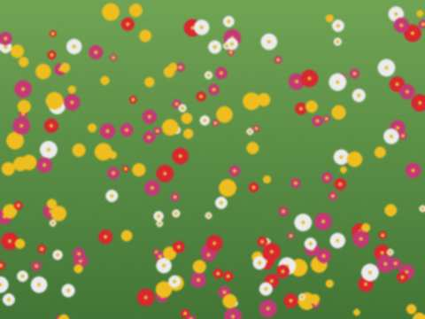
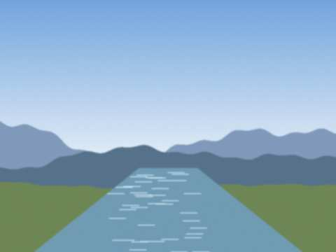
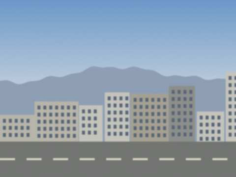
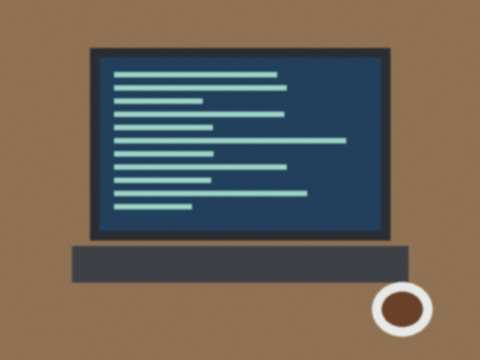

Archive for the ‘me’ Category
20.08.2009 22:00
mood: grown up?? · music: tüntolk (the happy one)
i got into the medical college. nurse. mama won. actually i won also, i want it now.
so this is the last post here probably. i will keep the blog for memory. if you are 16 and wearing black in talas: it gets better. and tüntolk is NOT just noise.
xX aika Xx
22.07.2009 21:00
mood: ok · music: tüntolk (the happy one)
the results: iradi 84, english 91, biology 79, maths 62. mama said "well, maths is a thing that happens to everyone". the college wants 70 average. i have 79. wait. i have to do the math. (79+84+91+62)/4 = 79. ok. ok. YES.
dont tell maths.
27.06.2009 22:30
mood: empty · music: none
the national test, 3 days. in the hall a man with a clock walked between the desks and every time he coughed my heart stopped. there is no Russian paper this year, they took it away, so for the first time everyone in our hall wrote in Iradi or English. Zhanyl wrote in Iradi, i wrote in English (a bad idea).
writing in a hall full of people who all breathe at the same time. i wont forget it.
23.05.2009 19:50
mood: everything · music: none
the last bell. we had ribbons and flowers, a girl from the first class rang the bell on a big boy's shoulder. my teacher cried, i didnt cry. then i went behind the gym and cried a little.

the flowers from the teachers. i gave them to mama. she gave them back. now they are in a cup.Zhanyl hugged me and said "I am not good at saying things" and then said it very well.
01.03.2009 20:15
mood: soft · music: Kara Suu (track 6)
we have light the whole evening now. Juju's kittens (adults now) sit by the lamp like they invented it. i did homework until midnight just because i could.
winter is over. i hope. mama says do not say that out loud.
23.01.2009 19:30
mood: frozen · music: none (no electricity lol)
we have light only 2 hours in the evening. i do homework with a candle like in 1800. juju sleeps on the radiator but it is cold so she is confused.
writing this at the internet club, they have a generator. 20 som for half an hour.
11.10.2008 23:10
mood: perfect · music: the rain
it rained all day. i love when the street smells like a stone. we sat in the corridor of the school and nobody went home, the teacher let us stay, and we told stories about Talas ghosts. Zhanyl told one about the Kariz bride, a woman in white who walks the old water galleries and leads smugglers the wrong way. we all got goosebumps. it was perfect.

the bridge in the rain, meerim's phone, last week.30.08.2008 21:00
mood: weird · music: Mor-Wave
last year of school starts on monday. 12th class. the test. then life. how is it possible that 1st class was yesterday.
meerim and i are going to the river tomorrow to take photos with her new phone (it has 1.3 megapixels!!!)
 the talas from the bridge. meerim's phone.
the talas from the bridge. meerim's phone.28.06.2008 18:40
mood: jealous (a little) · music: Mor-Wave
went with meerim to the university to see where she has the exams. so many stairs! so many people who all know where they are going! she walked in like she lived there, i stayed on the pavement. then she came out with a face like a lemon and said "old Iradi, 4 hours".

the main building of TSU, from the outside. i didnt go in. next time.i have two more years until it's me. no. one more. no. i dont know.
19.04.2008 22:05
mood: nervous · music: radio
kündölük updated to 2.0 and for ten minutes i could not find the "new post" button. it moved. everything is a bit more grey on the edges but my black and pink survived, with the marquee, thank god. meerim's glitter was damaged and Bekzhan fixed it, she says, "he is a hero, he is also boring".
i like that you can add a picture to a post now with one click. i will use it only when the picture is worth it. (my pictures are always worth it.)
22.03.2008 21:45
mood: poor · music: nothing, i cant afford any
the dollar is 8.40 now, not 5. mama and papa talked about it in the kitchen with the door closed and the door was thin. what i understood: the cd of Kara Suu that my cousin was going to bring from Almaty now costs 70 som more. my pocket money is the same. so the cd is further away.
(it is "about 70 som". i did the calculation four times.)
new rule: no more cd's. only the radio. radio is free. also radio is sad about this too.
09.02.2008 19:20
mood: proud · music: tüntolk (the sad one, but happy)
the school art exhibition. my lantern girl from the Talas bridge is on the wall of the second floor corridor, next to a very good pencil horse (Zhanyl's). the sign says "Aika, 11 B, ink". the teacher said "very dark, very good". i heard that.

the drawing, finally scanned at the photo shop. 5 som a scan. the eyes survived.a boy from 8th class stood and looked at it for a long time. i pretended not to see him. then he said "scary" and walked away. best review ever.
15.12.2007 23:15
mood: dark · music: tüntolk (the sad one)
some boys from 11 "A" laughed at my eyeliner on the stairs. whatever. in 10 years they will be fat and boring and i will be an artist in Paris.
(or a nurse. mama says nurse.)
26.10.2007 20:50
mood: full of love · music: lullabies (mama's)
JUJU HAD KITTENS. 4. at 3 in the morning in the wardrobe, on my black sweater, of course. two black, one grey, one with a white sock. mama said "we are not keeping them". four days later mama said "the grey one stays".
names so far: Bulut (cloud), Tün (night), Kyl (hair, because he is thin), and the sock one is "Sock". i know. i have no imagination at 3 a.m.
02.09.2007 21:30
mood: strange · music: Kara Suu
school started. our class had 31 people in june, now 26. empty desks at the back. nobody sits at them, even when we are short of space. 11th class now. the stairs smell of new paint and the first-years run like they are being chased. nobody laughed at my eyeliner today. (it is only the first day.)
Zhanyl is at the desk by me again. she brought a new notebook. the horses started on the first page.
14.07.2007 22:10
mood: slow · music: Mor-Wave (very quiet)
the electricity comes at night for a bit. so i draw with a candle on the table and the pencil makes a big shadow on the paper, like another hand. Juju watches the pencil.
 our window at 10 p.m. one candle and the whole city dark behind it.
our window at 10 p.m. one candle and the whole city dark behind it.i dont want to write about the other things. i want to write that the drawing is going well.
02.06.2007 20:45
mood: better · music: Mor-Wave
school is over. we are all ok. i am going to draw ALL summer and not think about anything.
new drawing: a girl with a lantern on the Talas bridge. took me 4 days. the eyes are the best eyes i ever drew. i will scan it at the photo shop when i have money.
27.04.2007 23:55
mood: . · music: none
we are fine.
12.03.2007 20:40
mood: quiet · music: none
we have a new girl in our class, Zhanyl, from a village in Kara-Buura. there are 46 new kids in the whole school, they came in february. our class got three. she sits next to me because there was an empty place.
she doesn't talk much. she draws horses in the margin of the notebook. they are better than mine. i asked her if i can borrow her eraser and she said "of course" like it was a big thing. i dont know what to say to her so i said "your horses are good". she smiled. first time.
22.02.2007 01:10
mood: scared · music: none
cant sleep. everyone is talking about the north. papa is on the phone with uncle all night. meerim if you read this call me tomorrow
18.01.2007 21:15
mood: doomed · music: tüntolk (track 4, again)
winter test in maths. 2 questions i knew, 4 questions i didnt, 1 question i didnt understand even what it was asking. the teacher looked at my paper and made a face like i had spilled something on it.
dear maths: i dont hate you. i just dont know you. please stop being so tall.
30.12.2006 22:10
mood: ok · music: radio
we are going to meerim's for new year. her mum makes olivier and the plov. we will watch the concert on tv and then go out on the square at midnight with sparklers. my mum says be home by 1. MUM. it's NEW YEAR.
 from meerim's balcony last year
from meerim's balcony last year09.12.2006 22:30
mood: weird · music: radio
no school today. the tv has speeches all day, mama turned the sound down and then up and then down. papa says "nothing changes, we still need to buy bread". so i drew. a girl with no face, just a lot of eyes. it came out scary. i think i like it.
25.11.2006 23:40
mood: hyper · music: Kara Suu
ok so meerim showed me Kündölük has a NEW THEME just for us, its called Tün Jyldyz (night star) and its black and pink and it has a MARQUEE. i chose it immediately. meerim is jealous because she is on the old one with her own css hahaha.
this blog is about music and my life and my drawings. no parents allowed!!!